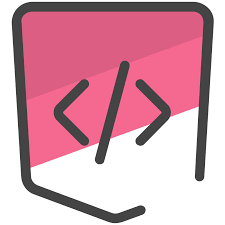
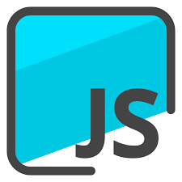

Competências
- HTML
- CSS
- JavaScript
- Python
Sobre
Nome: José Gabriel Abreu Moreira
Nascimento:26/07/2005
Desenvolvedor Junior nas linguagens acima citadas. Possui 2 Medalhas nas olimpíadas brasileiras de astronomia e astronautíca, o que mostra sua afinidade com as ciências exatas.
Atualmente, estuda no IFPB - Cajazeiras, cursando o Curso integrado em informática. Ainda, sem experiência, mas visa um estágio na área de front-end.
Formação Acadêmica
(2020 - 2022)
IFPB - Instituto Federal de Educação, Ciência e Tecnologia da Paraíba - Campus Cajazeiras
Curso Técnico Integrado em informática